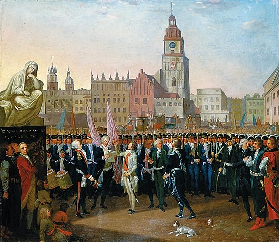

Tadeusz Kościuszko
Tadeusz Kościuszko was born on February 4, 1746, in Mereczowszczyzna
(currently in Belarus) near Koava in the Polesie. His full name is
Andrzej Tadeusz Bonewentura Kościuszko (later he was using mainly his
second name). He is hero of Poland and USA. He was born as 4th child of
impoverished nobleman. From 1755 to 1760 he was learning at Piarist
college in Lubiszow. He left school in 1760 due to his father death two
years earlier.

He joined August Poniatowski's Corps of Cadets in 1765. He participated
in special engineering course. He served as a vice brigadier in the rank
of ensign. Sience 1768 he was a Captain. He graduated from school with
this rank. He returned to Poland in 1775, but he couldn't find any job.
He couldn't marry Ludwika Sosnowska, whom he loved due to insufficient
property.
From Poland he traveled to Dresden, and from there to Paris. In Paris he
decided to go to the America. In 1774 he went to Philadelphia, where he
worked on buliding fortifications. In 1780 he became chief engineer of
the southern army. In 1783 he became a brigadier general and received
honorary US citizenship.
Next year he returned to Poland and stayed in Siechanowice. In 1789 he
joined army and received the rank of major general. During
Polish-Russian war in 1792 he fought, inter alia, at Dubienka. He
resigned when Stanisław August Poniatowski joined the Targowica
confederation.

He went to Galicia where he tried to prepare an uprising. On March 24,
1794, Tadeusz Kościuszko took the leadership of the insurrection against
Russia and Tsarina Catherine. This insurrection was named in his honor
as the Kościuszko Insurrection.
Due to insufficient number of weapons he formed the formation of
scythemen. On April 4, 1794, the Battle of Racławice took place, in
which the Kosynierzy took over many Russian cannons.
On May 7, Kościuszko signed the Połaniecki universal, extending the
personal freedom of peasants. In the lost battle of Maciejowice on
October 10 he was captured. It heralded the unfortunate end of the
uprising. The last branches were disbanded on the 16th of October near
Radoszyce. Although the uprising resulted in the third partition of
Poland, it remained in the hearts of Poles as an example of fighting for
independence.
Kościuszko was released from captivity after the death of Tsarina
Catherina. He went to the United States for a short time. He met old
friends there. He returned to Europe and lived in Paris from 1798. He
met Napoleon, but as a Republican he did not support him.
He finally settled in Switzerland, where he died on October 15, 1817. He
was buried in the Wawel Cathedral in 1819.